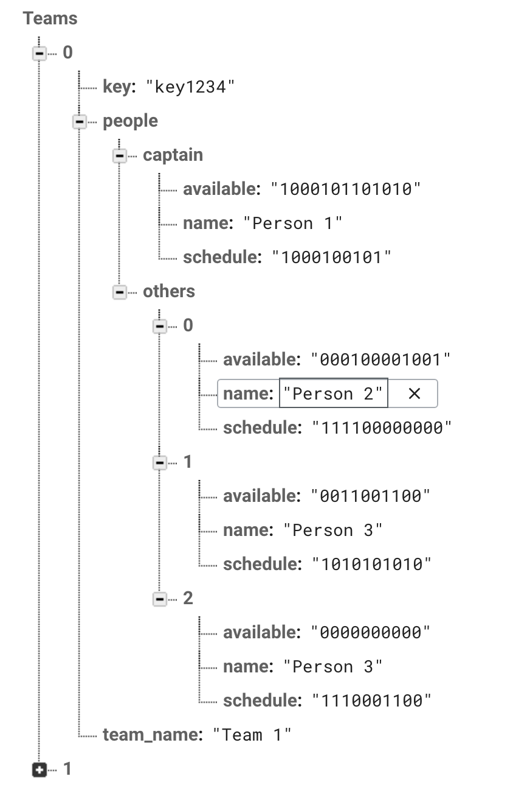
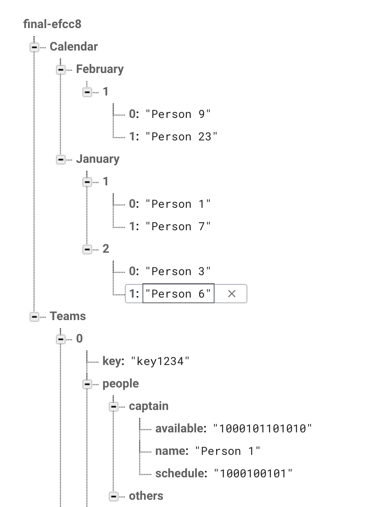

OVERVIEW
We would like to create a web application that helps Duke students organize their tenting schedules on a platform that also functions as a social network. Since a third of the Duke population participates in any form of tenting, our app would appeal to many students who struggle to organize shifts for their tenting groups.
FEATURES: USERS
- Admin (app developers & line monitors)
- Read-write permissions for all calendars
- Add, remove, edit people on any calendar and/or team
- User (tenting participant)
- Read-write permission for individual calendar
- Read-only access for global calendar
- Captain can add, remove, edit people on individual calendar and/or team
- Guest (anyone not logged in)
- Read-only access for global calendar
FEATURES: FILTERS, NOTIFICATIONS
Filters will allow guests, users, and admins to view specific events of each calendar. Another feature that we would like to include is push notifications to notify people of their tenting shift(s), a grace period (dependent on if there is another basketball game during the season and/or severe weather conditions), and instances where a tenting shift is dropped and needs picking up.
TOOLS: FIREBASE
In the "Teams" array, we plan on implementing functionality that allows for one person, the captain of the team, to perform certain tasks on the application. Each team will have a unique key that will be referenced when a user joins a team. Availability will be determined by a string where 1 indicates that a user is free and a 0 indicates that they're not for each hour. We will have a similar method for determining when a user is assigned to a shift and in the tent.
In the "Calendars" array,


METHODS: DATABASE